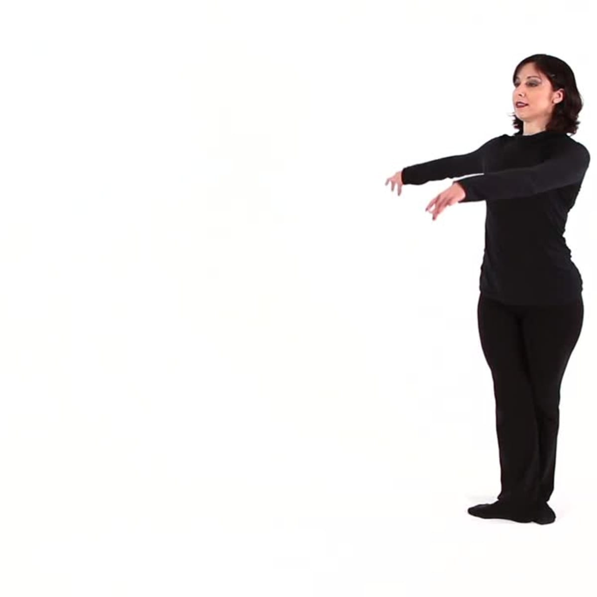
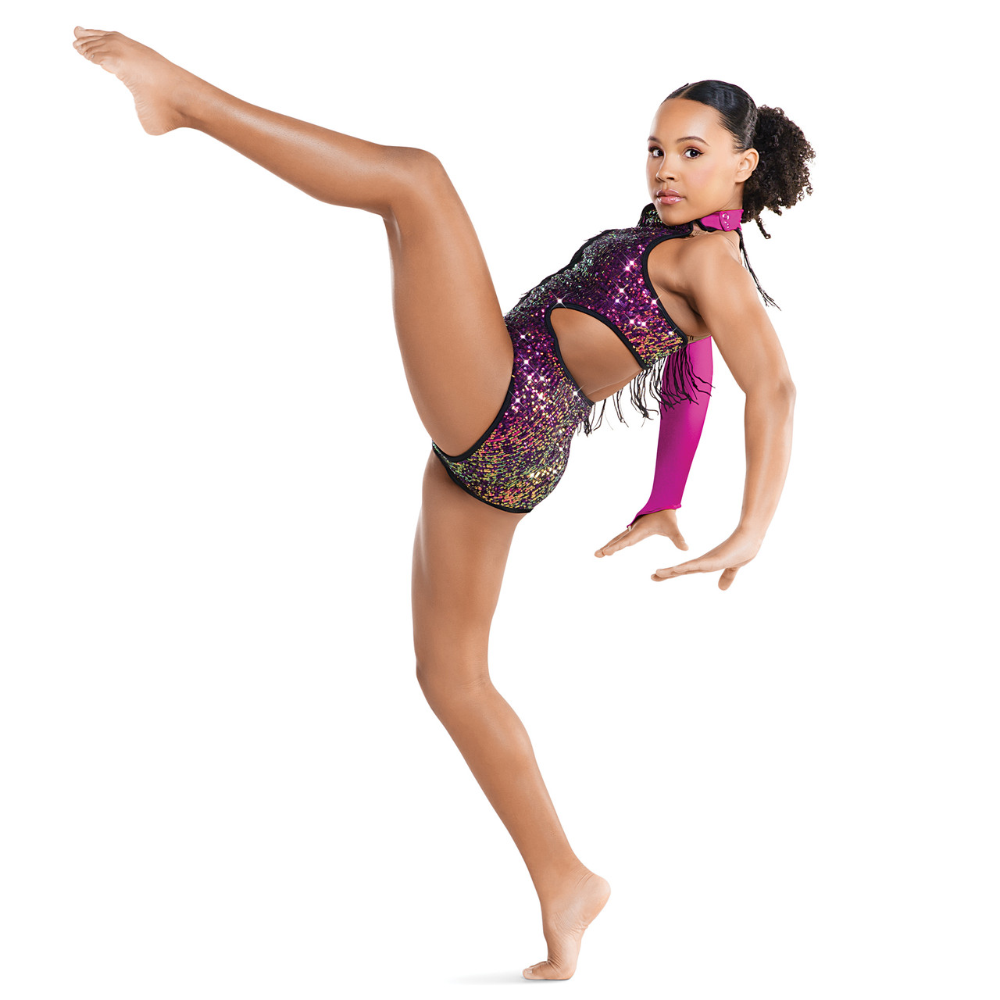

Jazz Square
A four-step movement that forms a square shape on the floor.

Chasse
A sliding movement where one foot "chases" the other foot across the floor.

Hitch-Kick
A high, dramatic kick where the dancer brings one leg up and kicks with the other leg, alternating quickly.

Attitude
A pose in which one leg is lifted in the air, bent at the knee, and the foot is placed at a low angle, with the torso remaining upright.
Pique
A sharp movement where the dancer steps directly onto one leg, often with a quick turn or as part of a series of turns.

Isolation
Movements that involve moving one part of the body while keeping the rest of the body still, often focusing on the head, shoulders, ribcage, or hips.